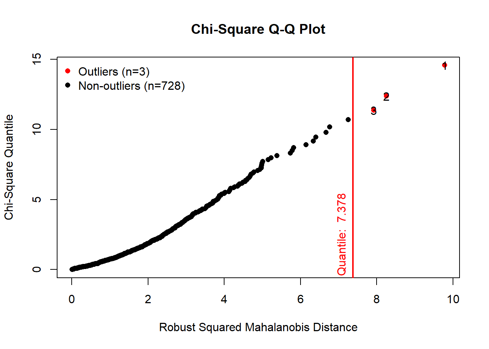

Bike sharing programs are high in demand these days. The benefits of bike sharing include reducing pollution, traffic, travel costs and dependence on oil, while improving public health. This study is intended to understand how environmental factors such as temperature promote or hinder public bike sharing.
The goal is to determine whether bike renting is affected by outside temperature. A simple linear regression model is the type of model that best describes the relationship between temperature and number of rented bikes.
The dataset (day.csv) was obtained from UCI Machine Learning Repository. The URL for the dataset is as follows: https://archive.ics.uci.edu/ml/datasets/Bike+Sharing+Dataset The variables in the dataset are as follows:
The variables we are dealing with are temp and cnt.
#Read the data
day <- read_csv("src/R/stats/day.csv")
head(day)## # A tibble: 6 x 16
## instant dteday season yr mnth holiday weekday workingday weathersit
## <dbl> <date> <dbl> <dbl> <dbl> <dbl> <dbl> <dbl> <dbl>
## 1 1 2011-01-01 1 0 1 0 6 0 2
## 2 2 2011-01-02 1 0 1 0 0 0 2
## 3 3 2011-01-03 1 0 1 0 1 1 1
## 4 4 2011-01-04 1 0 1 0 2 1 1
## 5 5 2011-01-05 1 0 1 0 3 1 1
## 6 6 2011-01-06 1 0 1 0 4 1 1
## # ... with 7 more variables: temp <dbl>, atemp <dbl>, hum <dbl>,
## # windspeed <dbl>, casual <dbl>, registered <dbl>, cnt <dbl>#Summary statistics
day %>% summarise( Var = "Temperature", Min = min(temp,na.rm = TRUE)%>% round(3),
Q1 = quantile(temp,probs = .25,na.rm = TRUE)%>% round(3),
Median = median(temp, na.rm = TRUE)%>% round(3),
Q3 = quantile(temp,probs = .75,na.rm = TRUE)%>% round(3),
Max = max(temp,na.rm = TRUE)%>% round(3),
Mean = mean(temp, na.rm = TRUE)%>% round(3),
SD = sd(temp, na.rm = TRUE)%>% round(3),
n = n(),
Missing = sum(is.na(temp))) -> table1
day %>% summarise( Var = "Count of Bike Rentals", Min = min(cnt,na.rm = TRUE),
Q1 = quantile(cnt,probs = .25,na.rm = TRUE),
Median = median(cnt, na.rm = TRUE),
Q3 = quantile(cnt,probs = .75,na.rm = TRUE),
Max = max(cnt,na.rm = TRUE),
Mean = mean(cnt, na.rm = TRUE),
SD = sd(cnt, na.rm = TRUE),
n = n(),
Missing = sum(is.na(cnt))) -> table2
knitr::kable(rbind(table1,table2))%>% kable_styling(bootstrap_options = c("striped", "hover", "condensed", "responsive", "scale_down")) | Var | Min | Q1 | Median | Q3 | Max | Mean | SD | n | Missing |
|---|---|---|---|---|---|---|---|---|---|
| Temperature | 0.059 | 0.337 | 0.498 | 0.655 | 0.862 | 0.495 | 0.183 | 731 | 0 |
| Count of Bike Rentals | 22.000 | 3152.000 | 4548.000 | 5956.000 | 8714.000 | 4504.349 | 1937.211 | 731 | 0 |
There are no missing values in the variables temperature and count of rental bikes.
The mvn() function can be used to detect multivariate outliers of the variables.
daytempcnt <- day[,c("temp","cnt")]
results <- mvn(data = daytempcnt, multivariateOutlierMethod = "quan", showOutliers = TRUE,showNewData = TRUE)
results$multivariateOutliers## Observation Mahalanobis Distance Outlier
## 1 1 9.756 TRUE
## 2 2 8.223 TRUE
## 3 3 7.889 TRUEdaytempcntdata <-results$newDataThere are 3 outliers in the dataset. We will be removing the 3 outliers and use the rest of the dataset for the analysis.
plot(cnt~temp, data = daytempcntdata,ylab="No.of Bike Rentals", xlab="Temperature", main="Bike Rentals by Temperature")The scatter plot shows that the two variables have some linearity. A simple linear regression was performed on the two variables without the outliers.
model1 <- lm(cnt ~ temp, data = daytempcntdata)
plot(model1,which = 1)The relationship between fitted values and residuals is flat (look at the red line), this is a good indication that the relationship between temperature and number of bikes rented is linear. In the plot above, the variance appears to remain the same. Therefore,we can assume homoscedasticity.
plot(model1,which = 2)The above plot suggests that there is no significant deviation from normality. It would be safe to assume that the residuals are approximately distributed normally.
plot(model1,which = 3)The red line is nearly flat and the variance in the square root of the standardised residuals is consistent across predicted (fitted values).
plot(model1,which = 5)The above plot shows that there are no evidence of influencial cases.
model1 %>% summary()##
## Call:
## lm(formula = cnt ~ temp, data = daytempcntdata)
##
## Residuals:
## Min 1Q Median 3Q Max
## -4615.9 -1141.0 -89.1 1050.1 3730.9
##
## Coefficients:
## Estimate Std. Error t value Pr(>|t|)
## (Intercept) 1246.2 161.4 7.722 3.79e-14 ***
## temp 6595.2 305.2 21.611 < 2e-16 ***
## ---
## Signif. codes: 0 '***' 0.001 '**' 0.01 '*' 0.05 '.' 0.1 ' ' 1
##
## Residual standard error: 1505 on 726 degrees of freedom
## Multiple R-squared: 0.3915, Adjusted R-squared: 0.3906
## F-statistic: 467 on 1 and 726 DF, p-value: < 2.2e-16The \(R^2\) for the above regression suggests that normalised temperature explains 39% of the variabiltiy in number of bikes rented.
The model summary also recorded a F statistic which is used to assess the regression model. F-test has statistical hypotheses as follows:
\[H_0: The \ data \ do \ not \ fit \ the \ linear \ regression \ model \]
\[H_A: The \ data \ fit \ the \ linear \ regression \ model\] The p-value for the F-Test reported in the model summary is <.001. Therefore,we reject \(H_{0}\).There was statistically significant evidence that the data fit a linear regression model.
We set the following statistical hypotheses to check the statistical significance of the intercept:
\[H_0: \alpha=0\ \] \[H_A: \alpha\ne0\ \] This hypothesis is tested using a t statistic, reported as t=7.722,p < .001. The intercept is statistically significant at the 0.05 level. This means statistically significant evidence exists that the intercept is not 0.
model1 %>% confint()## 2.5 % 97.5 %
## (Intercept) 929.3755 1563.001
## temp 5996.0335 7194.287\(H_0: \alpha=0\ \) was not captured by the confidence interval. Therefore, we reject it.
The hypothesis test of the slope is as follows:
\[H_0: \beta=0\ \]
\[H_A: \beta\ne0\ \] The slope was also tested using a t statistic which was reported as t=21.611,p < .001. As p<0.05, we reject \(H_0\). Looking at the confint() function, the 95% confidence interval does not capture 0. Therefore, we reject \(H_0\). There is statistically significant evidence that temperature is positively related to number of bikes rented.
plot(cnt~temp, data = daytempcntdata)
abline(model1,col="red")A linear regression model was fitted with a single predictor,temperature, to estimate the dependent variable,count of bikes rented. A scatter plot testing the bivariate relationship between temperature and count was examined before fitting the regression. A positive linear relationship was shown by the scatter plot. Other non-linear trends were omitted. The overall regression model was statistically significant, F(1,726)=426, p< .001, and explained 39% of the variability in count of bikes, \(R^2\)=.39. The estimated regression equation was cnt=1246.2+.6595.2∗temp. The positive slope for temperature was statistically significant, b=6595.2, t=21.611, p<.001, 95% CI [5996.0335,7194.287]. Final inspection of the residuals supported normality and homoscedasticity.
The positive linear relationship between temperature and bike rental count shows that higher the temperature, higher the bike rental count. The warm weather promotes the use of public bikes.
It would be very interesting, if we could extend our research to other factors, such as humidity and windspeed and explore if these factors could also impose any inference on bike rental. We could also investigate if there is any difference in weather influence on bike rental in different metropolitan cities and make statistical comparisons. The research question can roll on extensively base on the above preliminary findings.
Original Source: http://capitalbikeshare.com/system-data
Weather Information: http://www.freemeteo.com
Holiday Schedule: http://dchr.dc.gov/page/holiday-schedule